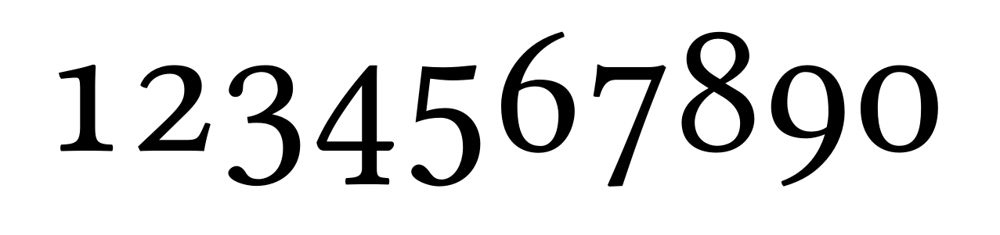

LaTeX 教學系列：數學排版
用最簡單、明瞭的方式進行 LaTeX 數學排版
前幾篇的教學著重在如何建立一份 LaTeX 文件，並且使用套件設定版面、文字樣式、邊界等。不過，到目前為止，我們尚未接觸到 LaTeX 最厲害的部分：數學排版。
排版在諸多領域都可以見到它的影子，例如活動文宣、計畫書、書籍、網頁等，無一不需要精心的排版設計。而在學術領域當中，排版是讓知識傳遞給讀者重要的媒介之一，因為學術論文的排版需要遵循嚴格的格式要求，包括頁邊距、字體大小、行距、引用格式等，目的是確保論文在學術期刊或會議上的一致性和可讀性。
為什麼要學數學排版呢？
誠如上述所言，不同領域的學術排版有不同的規定，常說「隔行如隔山」，例如人文社會的排版與理工領域就大相徑庭。理工領域的排版十分著重數學——模型設定、模擬結果…等都需要數學的輔助。當我們使用 Word 排版時常常會達不到意想的效果，且 Word 內建的 LaTeX 功能不太友善。正是因為 LaTeX 是針對專業數學所設計的排版軟體，因此透過 LaTeX 具有的數學排版系統能夠達到最佳效果。因此，在這篇使用 LaTeX 進行數學排版的文章中，你會學到：
- 如何進入數學排版環境
- 數學排版技巧
- 數學字體設定
文章的最後也會提供讀者練習題，可以嘗試用這篇文章的內容嘗試看看！
數學排版的起手式
在正式進入 LaTeX 的數學排版教學之前，我們需要知道一件事：TeX 系統僅提供最基本的排版功能，因此如果需要其他額外的設定，就需要套件的輔助。
一般來說，LaTeX 最常見的數學相關套件有amsmath、amssymb、amsfonts、amsthm，這四個套件是由美國數學學會（American Mathematical Society, AMS）所開發和維護的。
| 套件名稱 | 功能描述 |
|---|---|
amsmath |
拓展數學環境和指令，包括對齊的方程組、多行方程、分段函數、矩陣環境等 |
amssymb |
提供 LaTeX 的數學符號庫，包含黑體字母、花體字母和其他特殊符號，用於表示集合、邏輯運算符等數學符號 |
amsfonts |
提供專門的數學字體，使我們可以使用更多樣化的字體來排版數學公式 |
amsthm |
拓展定理環境的功能，讓定理、引理、命題等數學結構的排版更加美觀 |
行內與行間公式
LaTeX 進入數學模式的方式有兩種。第一種是行內的數學模式（inline math mode），適合用於段落中的簡單數學表達式，也就是與普通文本混合排版。行內數學模式的表示方法是將數學指令包裹在 $...$、\(...\) 或 \begin{math}...\end{math}中。例如：$a^{2} + b^{2} = c^{2}$ 會在行內顯示 \(a^{2} + b^{2} = c^{2}\)。這三種模式都是等價的，不過較推薦 $...$ 的方式。
另一種方式是行間的數學模式（display math mode），適合用於需要獨立顯示的方程或較複雜的數學公式。行間數學模式可以通過以下兩種方式之一來實現：
| LaTeX 語法 | 說明 |
|---|---|
\begin{displaymath}...\end{displaymath} |
不帶編號的行間公式數學環境 |
\[ ... \] |
displaymath 環境的簡化形式 |
$$ ... $$ |
與上面的行間數學環境等價，但可用 \eqno 或 \leqno 人工編號 |
\begin{equation}...\end{equation} |
自動編號的行間公式數學環境 |
希臘字母
數學、工程、物理、化學等理工領域中，最常使用的符號即是希臘字母，通常希臘字母被用於表示變數。LaTeX 的希臘字母輸入十分簡單，只要在進入數學模式後，參考下表即可輸出希臘字母。
| 字母 | 指令 | 字母 | 指令 |
|---|---|---|---|
| \(\alpha\) / \(A\) | \alpha / A |
\(\nu\) / \(N\) | \nu / N |
| \(\beta\) / \(B\) | \beta / B |
\(\xi\) / \(\Xi\) | \xi / \Xi |
| \(\gamma\) / \(\Gamma\) | \gamma / \Gamma |
\(\omicron\) / \(O\) | \omicron / O |
| \(\delta\) / \(\Delta\) | \delta / \Delta |
\(\pi\) / \(\Pi\) | \pi / \Pi |
| \(\epsilon\) / \(\varepsilon\) / \(E\) | \epsilon / \varepsilon / E |
\(\rho\) / \(\varrho\) / \(P\) | \rho / \varrho / P |
| \(\zeta\) / \(Z\) | \zeta / Z |
\(\sigma\) / \(\Sigma\) | \sigma / \Sigma |
| \(\eta\) / \(H\) | \eta / H |
\(\tau\) / \(T\) | \tau / T |
| \(\theta\) / \(\vartheta\) / \(\Theta\) | \theta / \vartheta / \Theta |
\(\upsilon\) / \(\Upsilon\) | \upsilon / \Upsilon |
| \(\iota\) / \(I\) | \iota / I |
\(\phi\) / \(\varphi\) / \(\Phi\) | \phi / \varphi / \Phi |
| \(\kappa\) / \(K\) | \kappa / K |
\(\chi\) / \(X\) | \chi / X |
| \(\lambda\) / \(\Lambda\) | \lambda / \Lambda |
\(\psi\) / \(\Psi\) | \psi / \Psi |
| \(\mu\) / \(M\) | \mu / M |
\(\omega\) / \(\Omega\) | \omega / \Omega |
注意到希臘字母在 LaTeX 中有一些變體，多半以 \var... 開頭，這些變體通常是為了滿足不同排版需求或數學表達習慣而設計的。例如原本的 \(\epsilon\) 與變體的 \(\varepsilon\)、原本的 \(\theta\) 與變體的 \(\vartheta\) 等。不同的變體字母在不同的數學上下文中可能看起來更美觀或更適合。例如，某些數學文獻中可能更偏好使用 \(\varphi\) 而不是 \(\phi\)，認為這樣更美觀或更易讀。1
特殊形式
所謂特殊形式，以統計學而言，一般來說母體平均值我們念作 bar \(X\)，寫法就是在 \(X\) 上面畫上一槓；或是樣本估計值我們念作 hat \(x\)，寫法則是在 \(x\) 上面畫上一個倒 v，但是要如何呈現呢？進入數學環境後，我們可以使用反斜線開啟指令，接著將需要調整的符號加入到花括號內中，即可得到期望的結果。
| 結果 | 指令 | 結果 | 指令 | 結果 | 指令 |
|---|---|---|---|---|---|
| \(\bar{x}\) | \bar{x} |
\(\acute{\eta}\) | \acute{\eta} |
\(\check{a}\) | \check{a} |
| \(\grave{\eta}\) | \grave{\eta} |
\(\breve{a}\) | \breve{a} |
\(\ddot{y}\) | \ddot{y} |
| \(\dot{x}\) | \dot{x} |
\(\hat{x}\) | \hat{x} |
\(\tilde{\theta}\) | \tilde{\theta} |
| \(\vec{a}\) | \vec{a} |
\(\overline{x}\) | \overline{x} |
運算、判斷與其他符號
生活中常見的運算符號，例如四則運算符號（加減乘除），輸入十分簡單，只要打上對應的符號即可。不過，數學中仍有其他運算與判斷符號，請見下表。
| 結果 | 指令 | 結果 | 指令 | 結果 | 指令 |
|---|---|---|---|---|---|
| \(+\) | + |
\(\pm\) | \pm |
\(\geq\) | \geq |
| \(-\) | - |
\(\mp\) | \mp |
\(\leq\) | \leq |
| \(*\) / \(\times\) | * / \times |
\(\cdot\) | \cdot |
\(\prec\) | \prec |
| \(/\) | / |
\(\cdots\) | \cdots |
\(\succ\) | \succ |
如果要使用上標（supscript）與下標（subscript），可以使用^和_符號。上標需要在變數後加上 ^，然後將上標內容包裹在花括號 {}中，例如x^{2}會顯示為 \(x^{2}\)。同理，下標則在變數後加上_，然後將下標內容包裹在花括號中，例如x_{1}會顯示為 \(x_{1}\)。
箭頭
箭頭是人類文明有史以來最偉大的發明之一。自從史前時代起，箭頭形狀的的工具（如矛、槍等）被用作狩獵和戰鬥的工具，在現代社會則廣泛地應用在交通標誌、數學符號、設計和電腦圖形界面等領域，成為指示方向和動作的重要工具。
在數學中，箭頭符號被廣泛應用於表示向量、映射、變換和極限等概念。例如幾何和物理學中，箭頭表示向量的方向和大小，而在代數和微積分中，箭頭則用於表示函數的映射和變換，如從一個集合到另一個集合的映射。或是在極限運算中，箭頭表示變數趨近於某一特定值的過程。此外，箭頭更被應用在邏輯推理和證明中，表示命題之間的推導關係，例如 \(A\) 推得 \(B\) 可以寫成 \(A \rightarrow B\)。在 LaTeX 中，有許多不同種類的箭頭符號，用於表示各種數學和邏輯操作。
| 箭頭類型 | Command | Example |
|---|---|---|
| 右箭頭 | \rightarrow |
\(\rightarrow\) |
| 左箭頭 | \leftarrow |
\(\leftarrow\) |
| 上箭頭 | \uparrow |
\(\uparrow\) |
| 下箭頭 | \downarrow |
\(\downarrow\) |
| 右雙箭頭 | \Rightarrow |
\(\Rightarrow\) |
| 左雙箭頭 | \Leftarrow |
\(\Leftarrow\) |
| 上雙箭頭 | \Uparrow |
\(\Uparrow\) |
| 下雙箭頭 | \Downarrow |
\(\Downarrow\) |
| 右魚叉 | \rightharpoonup |
\(\rightharpoonup\) |
| 左魚叉 | \leftharpoonup |
\(\leftharpoonup\) |
| 右下魚叉 | \rightharpoondown |
\(\rightharpoondown\) |
| 左下魚叉 | \leftharpoondown |
\(\leftharpoondown\) |
| 長右箭頭 | \longrightarrow |
\(\longrightarrow\) |
| 長左箭頭 | \longleftarrow |
\(\longleftarrow\) |
| 右鉤箭頭 | \hookrightarrow |
\(\hookrightarrow\) |
| 左鉤箭頭 | \hookleftarrow |
\(\hookleftarrow\) |
在 LaTeX 中，應該使用 \to（\(\to\)）還是 \rightarrow（\(\rightarrow\)）取決於需求與上下文。雖然這兩個指令能夠產生類似的字符，但 \to 更加簡潔，且程度較短，並且在表達極限時語義更明確，因此通常建議在極限運算中使用 \to。例如 \lim_{x \to \infty} f(x) \[
\lim_{x \to \infty} f(x)
\]
而 \rightarrow 則可以在其他需要更加明確顯示方向的情況下使用。
數學排版小技巧
事實上，如果你有仔細看一下上面的內容，並且嘗試看看如何使用數學排版指令，不難發現這些指令毋需死記硬背，只要你熟悉一些簡單的數學英文，就可以在短時間內上手。2如果你想要知道更多數學排版指令，可以參閱這份文件，裡面的指令大致上可以應付論文內大部分的符號。
我們利用一元二次方程式的公式解來做說明，作為台灣的學生，能夠朗朗上口地背誦出「2a分之負b正負根號b平方減4ac」想必不是一件困難的事，那麼要如何用 LaTeX 表達呢？
\[ x = \frac{-b\pm\sqrt{b^2 - 4ac}}{2a} \]
分數的部分我們使用\frac{}{}來表示，第一個括號裡面放分子，第二個括號裡面放分母。正負我們用\pm，根號用\sqrt{}。程式碼如下：
第二個需要注意到的地方是，在先前的文章提過，如果要使用某個指令，要將欲作用的內容放在花括號內。在這邊重申的原因是當我們在使用上標與下標時，多半會忘記使用花括號，導致上標與下標內容無法正確顯示。如 \(a_{21}\) 的正確寫法是 a_{21}，如果忘記放在花括號內，即 a_21，就會顯示 \(a_21\)，只有 \(2\) 變成下標。因此，在練習時就需要養成良好的習慣，將欲作用的內容放在花括號內。
花枝招展的數學：進階設定
簡單了解 LaTeX 的數學排版後，接下來我們就要真正進入到數學排版設定的環節。由於數學套件所提供的功能有限，或是排版需求複雜，因此有必要了解如何進行一些進階設定。
數學函數
數學中常見的函數都是 LaTeX 內建的，毋需載入套件，如三角函數、指數函數、對數函數等，都是直接輸入函數名稱即可，例如正弦函數（sine）即使用 \sin{}，輸出結果為 \(\sin{x}\)。
但是假設我們需要定義一個新的函數名稱，就需要使用 amsmath 套件的協助。在前言區載入套件後，我們即可使用 \DeclareMathOperator{\函數名指令}{函數名} 或 \DeclareMathOperator*{\函數名指令}{函數名} 自定義函數名稱。不帶星號的 \DeclareMathOperator 指令：用於普通函數名的定義。例如，定義一個名為 \foo 的函數名，對應的顯示效果是 \(\text{foo}\)。 帶星號的 \DeclareMathOperator* 指令：用於處理帶上下角標的函數名。在處理角標時，可根據需要將上下角標放置在函數名的正上方或正下方。
如果不想提前定義函數名時，可以直接在公式中使用 \operatorname{函數名} 或 \operatorname*{函數名}。這樣的設定方式較為彈性，也不必擔心忘記函數名稱。例如統計學的變異數符號為 \(\operatorname{var}\) 或 \(\operatorname{Var}\)，可以使用 \operatorname{var} 或 \operatorname{Var} 處理。
常用數學排版
接下來介紹一些常用的數學排版技巧。上面我們已經提過角標的設定，在這邊簡單複習一下，如果要使用上標，則需在變數後面加上 ^{...}，下標則是在變數後加上 _{...}。如果需要多層的角標，則需要分開設定。例如 \(x_{1}^{2}\) 的寫法是 x_{1}^{2}。3
分數
LaTeX提供了多種方式來創建分數，其中最常用的是 \frac 和 \dfrac 指令。使用 \frac 指令可以創建一個標準的分數，指令是 \frac{分子}{分母}。例如 \frac{a}{b} 會顯示為 \(\frac{a}{b}\)，分數會根據周圍的文本自動調整大小。而使用 \dfrac 指令則可以強制分數以顯示樣式呈現，即使在行內數學模式中也是如此，其指令同樣為 \dfrac{分子}{分母}。
| 指令 | 用途 | 說明 |
|---|---|---|
\frac |
用於行內或行間數學模式中，自動調整分數的大小以適應上下文。 | 行內模式中的分數會比較小，以保持文本的整體高度。 |
\dfrac |
始終以顯示樣式呈現分數，不論是在行內還是行間模式中。 | 使得分數看起來更大、更明顯，適合於展示重要的公式或需要清楚表達的情況。 |
根號
LaTeX 中根號的最基本的根號表示方法是使用 \sqrt{...}，會顯示一個二次根，。例如 \sqrt{x+y} 會顯示為 \(\sqrt{x+y}\)。此外，如果需要表示更高次的根號，可以使用帶參數的 \sqrt[n]{...} 指令，例如 \sqrt[4]{x+y} 會顯示為 \(\sqrt[4]{x+y}\)。
此外，根號符號是可以嵌套使用的，代表使用者可以在根號內部再置入一個根號。例如 \sqrt{\sqrt{a}+\sqrt{b}}，結果為 \(\sqrt{\sqrt{a}+\sqrt{b}}\)。
注意到在一些情況下，不同的根號符號會出現高度不一致的情況，這會導致公式顯示無法對齊，十分礙眼。為了解決這個問題，可以使用 \mathstrut 指令。\mathstrut 是一個與圓括號同高但沒有寬度的數學支柱，它可以幫助調整公式的垂直對齊。例如，\sqrt{a\mathstrut}+\sqrt{b\mathstrut} 會顯示為 ( + )，這樣可以確保兩個根號符號在同一水平線上。
數學中的空白
在 LaTeX 的數學模式中，適當插入空白間隔是十分重要的，從而提高數學公式的可讀性和美觀度。LaTeX 提供了多種指令來插入不同大小的空白間隔：
| 名稱 | 指令 | 範例 |
|---|---|---|
| 默認間隔 | \(abc \rightarrow\leftarrow abc\) | |
| 細間隔 | \, |
\(abc \rightarrow\,\leftarrow abc\) |
| 負細間隔 | \! |
\(abc \rightarrow\!\leftarrow abc\) |
| 中等間隔 | \: |
\(abc \rightarrow\:\leftarrow abc\) |
| 大間隔 | \; |
\(abc \rightarrow\;\leftarrow abc\) |
| 0.5em 間隔 | \enspace |
\(abc \rightarrow\enspace\leftarrow abc\) |
| 1em 間隔 | \quad |
\(abc \rightarrow\quad\leftarrow abc\) |
| 2em 間隔 | \qquad |
\(abc \rightarrow\qquad\leftarrow abc\) |
| 自定義間隔 | \hspace{3em} |
\(abc \rightarrow\hspace{3em}\leftarrow abc\) |
數學中的文本
如果文件中的數學模式需要使用文本，我們必須按照以下步驟進行處理。首先，如果是英文文本，則不用特別進行設定即可操作（除非有特殊字體需求）；如果是中文文本，則需要載入中文相關套件與字體，如果不會或忘記的讀者可以參考這篇文章。
載入套件並設定完字體後，便可以在數學模式中插入文本，例如：
注意到在文本內，如果我們沒有空格，則顯示結果也不會有空格。因此，為了美觀，如果在文本與文本之夾有數學符號，則會在文本前面或後面加上空格，使數字與文本之間留有適當距離。
堆積符號與上下劃線
有時作者需要在數學公式內標示出重要內容時，會使用括號將特定範圍以括號或在符號上加入文字等做出標記，在 LaTeX 當中我們以堆積符號（stackrel）與上下劃線達到上述目的。這些功能的寫法分別為
- 堆積符號：
\stackrel{堆疊文字}{欲堆疊符號} - 上下劃線：
\overline{...}或\underline{...} - 上下括號：
\overbrace{表達式}^{標註}或\underbrace{表達式}_{標註}
舉例來說，數學中我們有許多方式表達「定義為」，例如 \equiv（\(\equiv\)）、:=（\(:=\)）這兩個常見的寫法。不過，我們也可以將此寫法改成在等號上加上 def，也就是 \stackrel{\mathrm{def}}{=}，排版結果為 \(\stackrel{\mathrm{def}}{=}\)。
括號
日常生活中，括號無處不在。無論是在撰寫數學公式、化學方程式，還是在撰寫程式碼或書寫筆記時，都會使用到各種括號。括號在組織和區分重要資訊的面向上有至關重要的功能。同樣地，在 LaTeX 中，括號也扮演著重要的角色。由以下表格可以了解不同類型的括號如何處理。
| 指令 | 說明 | 排版結果 |
|---|---|---|
\left( ... \right) |
圓括號 | \[ \left( a + b \right) \] |
\left[ ... \right] |
方括號 | \[ \left[ a + b \right] \] |
\left\{ ... \right\} |
大括號 | \[ \left\{ a + b \right\} \] |
\left| ... \right| |
絕對值括號 | \[ \left| a + b \right| \] |
\left\| ... \right\| |
雙竪線括號 | \[ \left\| a + b \right\| \] |
\left\langle ... \right\rangle |
尖括號 | \[ \left\langle a + b \right\rangle \] |
\left\lfloor ... \right\rfloor |
下取整括號 | \[ \left\lfloor a + b \right\rfloor \] |
\left\lceil ... \right\rceil |
上取整括號 | \[ \left\lceil a + b \right\lceil \] |
\left( ... \right. |
左圓括號右不閉 | \[ \left( a + b \right. \] |
\left. ... \right) |
右圓括號左不閉 | \[ \left. a + b \right) \] |
不過，在 LaTeX 的數學模式中，括號的大小是根據其所包含的內容自動調整的。但有時為了更好的排版效果，需要手動調整括號的大小。LaTeX 對此提供了一系列指令來改變括號的大小，使得括號能夠正確包圍內容。
在 LaTeX 的數學模式中，括號的大小是根據其所包含的內容自動調整的。但有時，為了更好的排版效果，我們需要手動調整括號的大小。LaTeX 提供了一系列指令來改變括號的大小，這些指令通常用於在公式中括號內的內容較大或較複雜的情況下，使得括號能夠正確包圍內容。
不同大小的括號指令
這些指令包括 \bigl、\Bigl、\biggl 和 \Biggl 等，用於指定不同大小的左括號；相應的右括號則使用 \bigr、\Bigr、\biggr 和 \Biggr。
\bigl和\bigr：生成較小的括號，適合較小的表達式。\Bigl和\Bigr：生成中等大小的括號，適合中等複雜的表達式。\biggl和\biggr：生成較大的括號，適合更複雜或更長的表達式。\Biggl和\Biggr：生成最大的括號，適合非常複雜或非常長的表達式。
| 大小類型 | 左括號指令 | 右括號指令 | 排版結果 |
|---|---|---|---|
| 小括號 | \bigl( a + b \bigr) |
\bigl( a + b \bigr) |
\[ \bigl( a + b \bigr) \] |
| 中等括號 | \Bigl( a + b \Bigr) |
\Bigl( a + b \Bigr) |
\[ \Bigl( a + b \Bigr) \] |
| 大括號 | \biggl( a + b \biggr) |
\biggl( a + b \biggr) |
\[ \biggl( a + b \biggr) \] |
| 最大括號 | \Biggl( a + b \Biggr) |
\Biggl( a + b \Biggr) |
\[ \Biggl( a + b \Biggr) \] |
省略號
在行文時，有時候為了方便，我們會使用省略號（中文稱作刪節號）來表達省略的部分，讓文章內容或數學公式看起來不那麼複雜，讓讀者著重在作者想要強調的重點。
| 指令 | 說明 | 排版結果 |
|---|---|---|
\cdots |
中間點省略號 | \[ a_1 + a_2 + \cdots + a_n \] |
\dots |
自動選擇適合的省略號樣式 | \[ 1, 2, \dots, 10 \] |
\ldots |
基線上的點省略號 | \[ a_1, a_2, \ldots, a_n \] |
\vdots |
垂直排列的點省略號 | \[ \begin{pmatrix} a_1 & b_1 \\ \vdots & \vdots \\ a_n & b_n \end{pmatrix} \] |
\ddots |
對角線排列的點省略號 | \[ \begin{pmatrix} a_{11} & a_{12} & \cdots & a_{1n} \\ a_{21} & \ddots & \ddots & \vdots \\ \vdots & \ddots & \ddots & a_{n-1,n} \\ a_{n1} & \cdots & a_{n,n-1} & a_{nn} \end{pmatrix} \] |
對齊
接下來就是 LaTeX 最精彩也是最厲害的功能之一。在數學中，我們時常碰到需要「分段」的函數，或是需要寫下最適化問題、聯立方程式，又或是將公式看起來更加整齊，我們便需要使用 LaTeX 的數學模式中的對齊功能。4
首先，在 LaTeX 中，任何與對齊有關的環境、設定，多半都離不開 & 符號。在 LaTeX 中，對齊數學公式通常使用 align 環境，可以由以下例子來了解 align 環境的使用方式。
在上面的例子中，可以看出如果要針對某一個特定的符號進行對齊，使用方式是將 & 放在該符號前面。另外需要注意到的一點是，使用 align 環境會依照順序產生編號，如果不想要編號的話，則使用 align* 或 aligned 環境即可。
align* 是一個不帶編號的顯示數學環境，適用於獨立顯示的數學公式。它會將公式居中排列；aligned 環境也是用於數學環境中的多行對齊環境，但是它不會自行進入數學模式，因此需要嵌套在如 equation 或 gather 等其他數學環境中使用。此外，aligned 環境的寬度只取決於其內容多寡，因此不會占滿整行。
矩陣
在 LaTeX 數學模式中，矩陣是經常使用的數學結構，特別是在線性代數、數值分析和物理學等領域。常見的矩陣環境包括 bmatrix、pmatrix 和 vmatrix，這些環境分別用於創建不同樣式的矩陣。
| 矩陣類型 | 指令 | 排版結果 |
|---|---|---|
| 方括號矩陣 | \begin{bmatrix} 1 & 2 \\ 3 & 4 \end{bmatrix} |
\[\begin{bmatrix} 1 & 2 \\ 3 & 4 \end{bmatrix}\] |
| 圓括號矩陣 | \begin{pmatrix} a & b \\ c & d \end{pmatrix} |
\[\begin{pmatrix} a & b \\ c & d \end{pmatrix}\] |
| 竪線矩陣 | \begin{vmatrix} x & y \\ z & w \end{vmatrix} |
\[\begin{vmatrix} x & y \\ z & w \end{vmatrix}\] |
| 無邊框矩陣 | \begin{matrix} 1 & 0 \\ 0 & 1 \end{matrix} |
\[\begin{matrix} 1 & 0 \\ 0 & 1 \end{matrix}\] |
| 行內小矩陣 | \left( \begin{smallmatrix} a & b \\ c & d \end{smallmatrix} \right) |
\[\left( \begin{smallmatrix} a & b \\ c & d \end{smallmatrix} \right)\] |
從上面的表格可以看出，用 LaTeX 寫出矩陣的通式為
\begin{矩陣環境}
矩陣元素 & 矩陣元素 \\
矩陣元素 & 矩陣元素
\end{矩陣環境}矩陣元素當然可以不只一個，只要版面足夠，想要有多少就有多少。
分段函數與聯立方程式
分段函數與聯立方程式在數學中是最常見的表達式之一。在 LaTeX 中，我們使用 cases 環境來輸出分段函數與聯立方程式或其他類似結構的公式。我們直接由下面的例子來說明：
方程式
無論是在數學、物理、化學，抑或是經濟學，方程式扮演了十分重要的角色。在 LaTeX 中，撰寫單個方程式最常用的環境是 equation 環境，該環境會依照順序，自動為每個方程式添加編號，並將方程式置中顯示。
多個方程式對齊
多個方程式的對齊請參見本文 Section 2.2.9 對於對齊的討論。
長方程式
對於特別長的方程式，可以使用 split 環境來將方程式分成多行並對齊。例如：
上述寫法會將長方程式分成兩行顯示，並在等號處對齊，整體而言還是作為一個方程式並給予編號。
方程式置中
除了 equation 環境，還可以使用 gather 環境來置中多個方程式，且每個方程式會分開顯示並獨立編號。
數學環境6
處理定理、證明、引理等數學環境是學術排版中的一個重要的部分。7LaTeX 提供了強大的套件 amsthm 來應對各種類型的數學環境。在介紹如何使用數學環境設定之前，我們需要知道，在數學相關的文件中，除非是教科書，否則如果僅有一個段落，就無須將數學環境進行編號。因此，以下的討論將會針對帶編號與無編號的數學環境進行說明。
帶編號數學環境
帶編號的數學環境最簡單的使用方式是在前言區加入 \newtheorem{數學環境}{顯示名稱}。例如 \newtheorem{theorem}{Theorem}，就是允許使用者在進入 theorem 環境後，顯示名稱為 Theorem。8底下直接透過實例說明：
前言區中的三個設定，分別建立 Theorem、Corollary 與 Lemma 三個環境，並且注意到其各自有不同的設定：
\newtheorem{theorem}{Theorem}[section]：具有額外的參數[section]，使定理計數器在每個新章節重新開始\newtheorem{corollary}{Corollary}[theorem]：創建了一個名為 corollary 的環境，這個新環境的計數器將在每次使用新定理環境時重置\newtheorem{lemma}[theorem]{Lemma}：創建了一個名為 lemma 的新環境，但它使用與定理環境相同的計數器
無編號數學環境
有時候我們可以使用無編號的數學環境，在文件中加入備註（remark）、評論（comment）或例子（example）。我們必須使用 amsthm 進行設定。
定義環境設定
在撰寫數學相關文件時，我們需要區分不同的數學環境（例如，定義和定理），有助於讀者輕鬆辨別以及理解不同的內容。同樣地，amsthm 套件提供指令，可以幫助你為不同的數學環境設置特定的格式，從而使文件更具有專業性。
證明環境
證明環境的使用十分簡單，只要載入 amsthm 套件後，在文件內使用 proof 環境即可。注意到使用證明環境後，在右下角會有證明完畢（quod erat demonstrandum, QED）的符號，如果想要更改符號，則我們可以在前言區或文件內使用 \renewcommand\qedsymbol{欲顯示的 QED 符號}，在前言區是直接修改整份文件的 QED 符號，如果在文件內，則是分別設定 QED 符號。下面是一個實際使用的例子：
數學字體設定
前面的文章提到過，使用者可以透過套件，在前言區修改字型，或是更改文本的主要語言。有些數學元素需要使用特定風格的字體來排版。習慣上實數會用黑板粗體字體來表示，即 \(\mathbb{R}\)，拓撲空間則使用書法字體來表示，即 \(\mathcal{T}\)。因此，本小節將介紹數學字體如何設定，以及如何改變數學字體的風格。
常用數學字體
LaTeX 中，數學公式的字體樣式多樣。誠如上述所言，使用者可以根據不同的需求、場景等來選擇合適的字體。以下表格展示了各種常用數學字體的種類、所需套件、使用指令以及排版範例：
| 字體種類 | 所需套件 | 指令 | 範例 |
|---|---|---|---|
| 默認斜體 | 無 | $y = mx + b$ |
\(y = mx + b\) |
| 粗體 | 無 | $\mathbf{A}$ |
\(\mathbf{A}\) |
| 打字機字體 | 無 | $\mathtt{ABC}$ |
\(\mathtt{ABC}\) |
| 無襯線字體 | 無 | $\mathsf{ABC}$ |
\(\mathsf{ABC}\) |
| 黑板粗體 | amssymb |
$\mathbb{R}$ |
\(\mathbb{R}\) |
| 花體大寫 | amsmath |
$\mathcal{F}$ |
\(\mathcal{F}\) |
| 花體小寫 | mathrsfs |
$\mathscr{L}$ |
\(\mathscr{L}\) |
| 哥特體 | amssymb |
$\mathfrak{ABC}$ |
\(\mathfrak{ABC}\) |
自定義數學字體
我們常常看到很多學術論文使用的字體會像是這樣：

我們稱之為舊式數字。在 LaTeX 中設置舊式數字的方法有多種，具體步驟根據所使用的字體和套件不同而有所差異。
使用 newpxtext 與 newpxmath
newpx 套件是基於 pxfonts 套件的修正與增強版本，並拆分為兩個部分：newpxtext 和 newpxmath。使用者可以透過 proportional 和 osf 這兩個選項，設置比例字體和舊式數字。9
關於設定數學字體風格的兩段程式碼解釋如下：
\useosf：用於啟用 oldstyle 數字。OSF 代表 “Old Style Figures”。這個指令會設置文本和數學模式中的數字為舊式數字（這些數字具有上升和下降部分，比較適合於正文中使用）。\AtBeginDocument{...}：表示在文件開始時執行括號內的命令\DeclareSymbolFont：\DeclareSymbolFont用於定義新的數學符號字體家族，在此它用來重新定義運算符號的字體家族。operators：這是字體家族的名稱，這裡指的是數學中的運算符號OT1：這是字體編碼，OT1 是最常用的 TeX 字體編碼\rmdefault：代表當前文件使用的默認羅馬字體系列m：這是字體系列的形狀，m代表普通（medium）字重n：這是字體的形狀，n代表普通形狀（normal shape）
使用 mathspec 或 fontspec
由於 newpx 提供的舊式數字字型是固定的，如果使用者有特殊需求，則建議使用 mathspec 或 fontspec 這兩個套件。但必須注意，在使用這兩個套件之前，需要用 xeLaTeX 編譯器進行編譯。
這兩個套件的使用方式十分相似，兩者只要在載入套件後，加上 \setmainfont{字體檔名稱} 後，設定數字風格即可。
mathspec設定方式：\setmathsfont(Digits)[Numbers=OldStyle]{字體檔名稱}，言下之意就是將主要字體與數學字體分開設定fontspec設定方式：\setmainfont[Numbers=OldStyle]{字體檔名稱}。不同於mathspec，fontspec可以加上[Numbers=OldStyle]，額外將數字令為舊式數字。
筆者較偏好使用 mathspec 套件，以下就以 mathspec 套件的使用方式作為範例：
小結
這篇文章主要是透過各種範例與表格，呈現如何在 LaTeX 中使用套件、指令進行數學排版。數學排版對於初學者來講，最困難的並不是指令記不起來，而是如何使用這些套件（至少筆者當初在學習的時候是這樣），畢竟指令有 cheeting sheet，但是套件的使用必須要閱讀官方文件。
初學者很容易因為不習慣，而出現程式碼前後不一致的習慣，例如角標一開始使用括號將內容包住，但是後面就忘記了。這樣的習慣看似沒什麼，但積少成多，在後面更複雜的設定就會嚴重影響到文件的一致性、可讀性與美感。此外，如果需要進行調整，務必對全文中的相同部分進行統一修改，否則建議使用預設格式，這樣至少不會出現嚴重的格式錯誤。
小試身手
下面的小試身手題目難度由淺至深，你可以使用最下面的即時排版區來檢查答案是否一致。
- 簡單分數：\(\frac{a}{b} = c^{2}\)
- 平方根與角標：\(x = \sqrt{a_{i} + b_{i}}\)
- 指數函數：\(e^{x + y}\)
- 對數函數：\(\log_{b}{x}\)
- 三角函數與角標：\(\sin^{2}{\theta} + \cos^{2}{\theta} = 1\)
- 極限：\(\lim_{x \to \infty}{\frac{1}{x}} = 0\)
- 求和符號與省略號：\(\sum_{i=1}^{n} x_{i} = x_{1} + x_{2} + \cdots + x_{n}\)
- 不定積分：\(\int e^{-x^{2}} \,dx\)
- 定積分：\(\int_{a}^{b} f(x) \, dx\)
- 絕對值：\(\lvert \frac{1}{2}x^{2}\rvert\)
- \((a+b)^{n}=\sum_{k=0}^n\binom{n}{k} a^{n-k}b^{k}\)
- \(\frac{d^2 y}{d x^2}+3 \frac{d y}{d x}+2 y=0\)
- \(\mathbf{a} \cdot \mathbf{b}=a_1 b_1+a_2 b_2+a_3 b_3\)
- \[\iint_D x^2+y^2 dA\]
- \[\begin{cases} x^2 & \text{if } x \geq 0 \\ -x & \text{if } x < 0 \end{cases}\]
- \[ \begin{aligned} \max\;& U(x,y)\\ \text{subject to}\;& g(x,y) = c\\ \end{aligned} \]
- \[ \begin{aligned} &[x] & \partial_x U &= \lambda \partial_x g(x,y)\\ &[y] & \partial_y U &= \lambda \partial_y g(x,y)\\ &[\lambda] & \quad g(x,y) &= c \end{aligned} \]
排版偷吃步：Mathpix Snipping
事實上有時候一個個輸入 LaTeX 程式碼很麻煩，尤其是當使用者時間緊迫，或是將 LaTeX 作為筆記軟體時，敲代碼反而會浪費時間。
那有偷吃步的方法嗎？
還真的有！這個方法是使用一套利用光學字符識別（OCR）技術，能夠準確地識別和轉換數學符號和公式的軟體 Mathpix Snipping。
如何下載 Mathpix Snipping
要下載 Mathpix Snipping，可以直接到Mathpix 官方網站。在網站首頁，您會看到下載連結，並根據使用的系統，選擇相對應的版本下載。Mathpix Snipping 支持多種不同的系統，包括 Windows、macOS、iOS 和 Android。此外，還有適用於網頁的線上版。下載完成後，按照提示安裝軟體。同時，Mathpix 也有提供手機版，只要到 App Store 或 Google Play 商店，輸入 “Mathpix Snipping” 即可下載。
如何使用 Mathpix Snipping
安裝完成後，打開 Mathpix Snipping 應用。使用快捷鍵或應用內建的截圖工具來截取螢幕上的數學公式或文本。截取後，Mathpix Snipping 會自動識別內容並生成對應的 LaTeX 程式碼。識別結果將顯示在 Mathpix 的畫面中，可以在上面進行編輯和調整。滿意之後可以將生成的 LaTeX 程式碼複製到剪貼板，貼到 LaTeX 編輯器、Word 文件或其他編輯器中。10
Footnotes
當然，這些變體使用情境需要依照領域的不同而有所調整。切勿因為某個符號長得特別好看，就在不適合的地方使用，這樣反而會本末倒置。↩︎
筆者當初練習的方法是找幾篇有數學符號的論文，搭配文中提及的文件，嘗試復刻排版結果。↩︎
一個特殊的角標例子：在微積分中的導數有兩種寫法，例如 \(f'(x)\) 可以寫成
f'(x)或f^{\prime}(x)。事實上兩種寫法都正確，端看個人如何運用。↩︎對齊功能之所以如此重要，除了在數學模式中可以用來進行聯立方程式、矩陣的排版之外，也應用於表格的排版上。↩︎
What is the difference between aligned in displayed mode and starred align?. TeX - LaTeX Stack Exchange. https://tex.stackexchange.com/questions/95402/what-is-the-difference-between-aligned-in-displayed-mode-and-starred-align↩︎
Theorems and proofs. Overleaf, Online LaTeX Editor. https://www.overleaf.com/learn/latex/Theorems_and_proofs↩︎
[基礎數學] 區別引理，定理，系理以及命題. https://ch-hsieh.blogspot.com/2016/02/blog-post_18.html↩︎
定理環境名稱與顯示名稱可以自行設定，但是建議不要亂改以免搞混。↩︎
CTAN: Package newpx. https://ctan.org/pkg/newpx?lang=en↩︎
關於 Mathpix Snipping 的使用方法，官方網站有更加詳細的解釋，請參考 Mathpix Snip Docs，如果是電腦版，請點選Snip on desktop；如果是手機版，請點選Snip on mobile。↩︎
Reuse
Citation
@online{sung2024,
author = {Sung, Anthony},
title = {LaTeX {教學系列：數學排版}},
date = {2024-07-05},
url = {https://yueswater.com/posts/2024-07-05-latex-math/},
langid = {en}
}